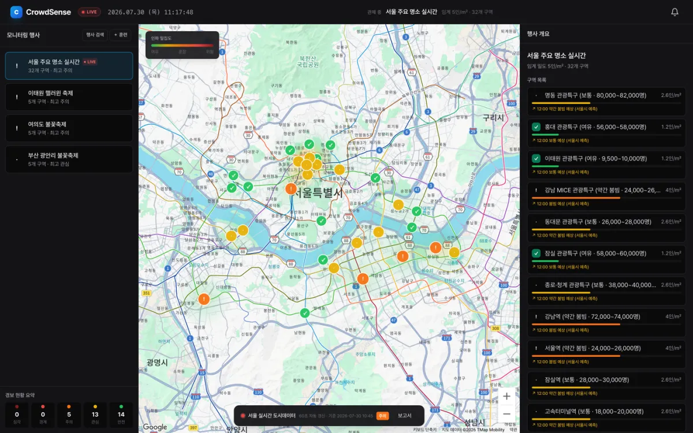
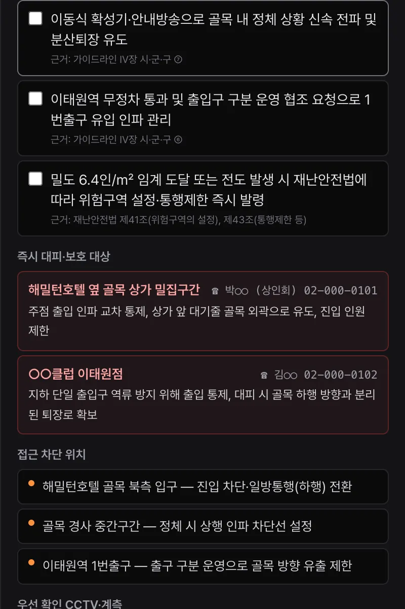
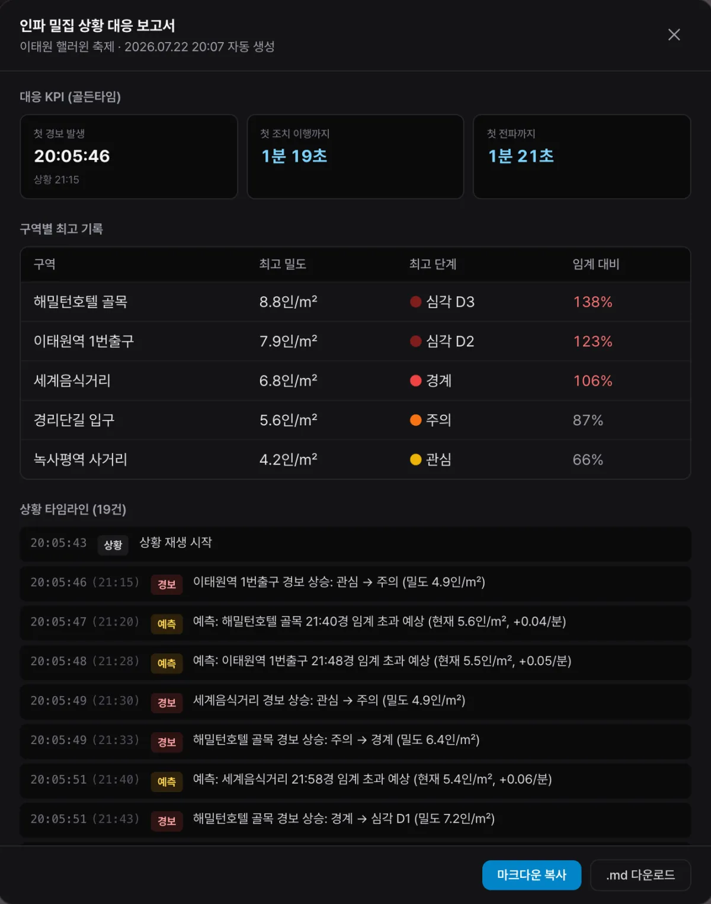
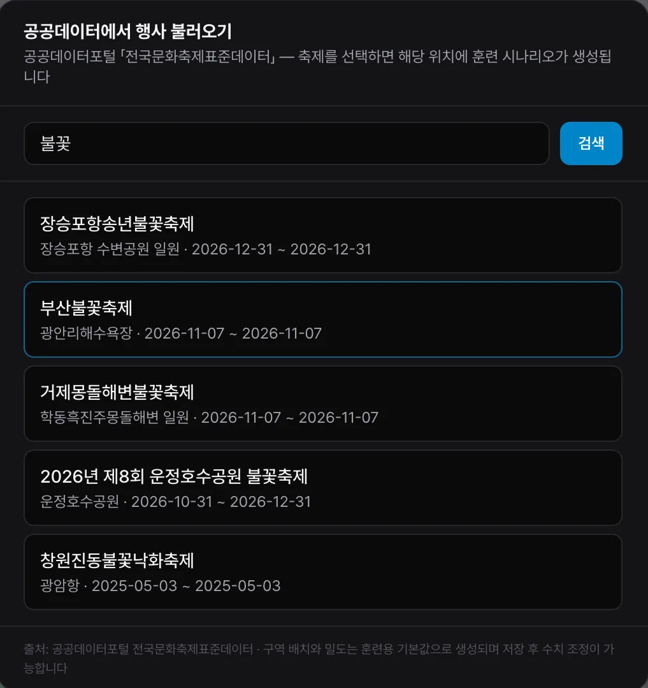

오차가 신호보다 클 때는 모른다고 말했습니다
서울시는 유입 인원을 정확한 수가 아니라 구간으로 줍니다. 중앙값으로 눌러 쓰다가 실측해 보니 5분 순유입의 구간 폭이 분당 24명이었습니다.당시 ‘급증’ 경보 기준(분당 +10명)보다 오차가 컸던 셈입니다. 구간을 그대로 들고 다니면서 부호가 정해지는 창만 판정에 사용하고, 아니면 ‘판정 불가’로 표시했습니다.
실측 5분 창 구간 폭 120명 = 분당 24명, 당시 급증 임계 분당 +10명
Project · AI 인파안전 관제
인파 경보가 울린 다음, 담당자가 할 조치와 전파, 보고를 한 화면에서 준비하는 AI 관제 지원 서비스입니다.
제4회 재난안전데이터 활용 창업경진대회 최우수상 (행정안전부 장관상)

아래 화면은 배포 중인 CrowdSense 그대로입니다. 서울시 실시간 도시데이터를 받아 지금 이 시각의 혼잡도를 보여 줍니다.
데이터는 서울시가 공개한 값이라 관측 시각과 화면 표시 사이에 지연이 있을 수 있고, 화면에 그 지연을 그대로 표시합니다. 화면이 좁으면 ‘새 창에서 크게 보기’로 여는 편이 편합니다.
Problem
Planning
혼자 만드는 프로젝트라 담당자의 첫 1분에 필요한 기능부터 순서를 정했습니다.
판정할 수 없을 때는 ‘판정 불가’를 그대로 보여 줍니다.
순유입 추세로 임계 도달 시각을 미리 계산합니다.
타임라인, 골든타임 지표, 보고서를 자동으로 남깁니다.
사용자 흐름은 ‘경보 이후’를 기준으로 위험 확인 → AI 브리핑 → 조치, 대피, 전파, 보고 문안 선택 → 타임라인 기록으로 고정했습니다.지도와 분석 기능은 이 흐름을 방해하지 않는 선에서 뒤로 미뤘습니다.
Decisions
재난 대응 화면에서 틀린 확신은 정보가 없는 것보다 위험합니다.
서울시는 유입 인원을 정확한 수가 아니라 구간으로 줍니다. 중앙값으로 눌러 쓰다가 실측해 보니 5분 순유입의 구간 폭이 분당 24명이었습니다.당시 ‘급증’ 경보 기준(분당 +10명)보다 오차가 컸던 셈입니다. 구간을 그대로 들고 다니면서 부호가 정해지는 창만 판정에 사용하고, 아니면 ‘판정 불가’로 표시했습니다.
분당 +150명은 체류 8.5만 명인 강남역과 1.3만 명인 이태원에서 무게가 다릅니다.판정 기준을 원 인원에서 밀도 변화율로 바꾸고, 계산식을 화면에 함께 보여 관제사가 검증할 수 있게 했습니다.
관측 후 노출까지 33분 걸린 사례가 있었습니다. 서버 현재 시각으로 계산하면 경보가 구조적으로 늦게 뜹니다.관측 시각을 기준으로 삼고, 화면에 관측 시각, 데이터 나이, 지금 기준 남은 시간을 함께 표시했습니다.
분산 목적지 후보 중 절반이 학교 운동장과 광장인데, 공공데이터에는 개폐 시각이 없습니다.“개방 여부를 모르는 곳은 시민 문안에 쓰지 마라”를 세 번 강화했지만 왕십리역 실호출 4회 중 3회가 잠긴 광장을 재난문자에 넣었습니다.시민 문안에 쓸 수 있는 장소와 확인이 필요한 장소를 입력 단계에서 두 목록으로 나눠 넘겼습니다.
동대문구 공원이 강남 위도로 찍혀 COEX 반경 700m 안에 9km 떨어진 공원이 잡혔습니다.같은 자치구 중심에서 5km 넘게 벗어난 좌표는 제외하고, 개폐 정보가 없는 시설은 닫힘이 아니라 ‘미상’으로 두고 확인 조치를 붙였습니다.
이벤트 보관 상한을 넘으면 앞부분을 자르면서 첫 경보만 남겼더니, 나중 조치가 ‘첫 조치’로 계산돼 골든타임이 30초에서 30,240초로 저장됐습니다.첫 경보, 첫 조치, 첫 전파 세 기준점을 함께 보존하도록 고쳤습니다.
Verification
서울 32개 지점에서 14일 동안 5분마다 모은 관측 스냅샷으로 시험했습니다.
읽는 법 서울시 자체 예보의 같은 지표는 85.9%였지만, 예고 창(480분) 길이에 따라 달라지는 값이라 우열로 비교하지 않습니다. 급증 경보의 오경보율은 79.5%로 높은 편인데, 이는 전체 관측의 91.1%가 등급 상승이 없는 구간이라는 조건과 함께 읽어야 합니다.
AI Agents
타입, 목데이터, 테스트 픽스처 생성프롬프트를 바꿀 때마다 같은 시나리오를 다시 돌려 결과 차이와 빠진 필드 확인리뷰 에이전트의 보류 의견을 반영한 뒤 헤드리스 브라우저로 저장까지 재검증
위험도, 도달 시각, 조치, 대피, 전파, 보고 6개 항목을 JSON 스키마 구조화 출력으로 고정시민에게 보여 줄 장소와 담당자가 확인할 장소를 입력 단계에서 분리데이터 근거가 없는 문안은 모델이 제안해도 표시하지 않기
혼자 만드는 프로젝트라 검토해 줄 사람이 없어서, 큰 작업마다 리뷰 에이전트의 검증을 받고 보류가 나오면 고쳐서 다시 받는 절차를 규칙으로 정했습니다.두 기능에 15라운드가 걸렸고, 타입 검사와 단위 테스트를 통과한 ‘경미한’ 수정이 실제 브라우저에서 기능을 완전히 멈춘 사례도 여기서 잡았습니다.그 뒤로는 모든 수정을 헤드리스 브라우저로 끝까지 돌려 서버에 기록이 남는지까지 확인합니다.
Screens




Scope
| 구분 | 행안부 인파관리지원시스템 | CrowdSense |
|---|---|---|
| 밀집도 히트맵 | 있음 | 있음 |
| 임계 경보 | 담당자 문자 | 문자 + 도달 시각 예측 |
| 대응 지시 | 없음 | AI 초안 + 가이드라인 근거 인용 |
| 전파 | 한국어 문자 | 수신자별 4종 × 4개 국어 + 음성 |
| 기록, 보고 | 없음 | 타임라인, 골든타임 지표, 보고서 자동 생성 |
프로젝트 당시 파악한 기존 시스템 설명과 자체 구현 범위 기준입니다. 외부 시스템의 전체 기능이나 현장 성능을 검증한 결과는 아닙니다.
Next.js 14, React 18, TypeScript, Tailwind CSS, Google Maps, Vercel, Vercel Blob
서울 실시간 도시데이터, 공공데이터포털 표준데이터, Claude API (JSON 스키마 구조화 출력), Web Speech API
Next
지금은 관제 화면이 열려 있어야 감시가 동작합니다. 서버에서 혼자 도는 감시 루프가 다음 과제입니다.기관별 계정과 로그인은 통신사, 지자체 파일럿을 전제로 구현하고 있습니다.현장 대응 시간 단축이나 사고 감소 효과는 이 기록에서 주장하지 않습니다.
More projects